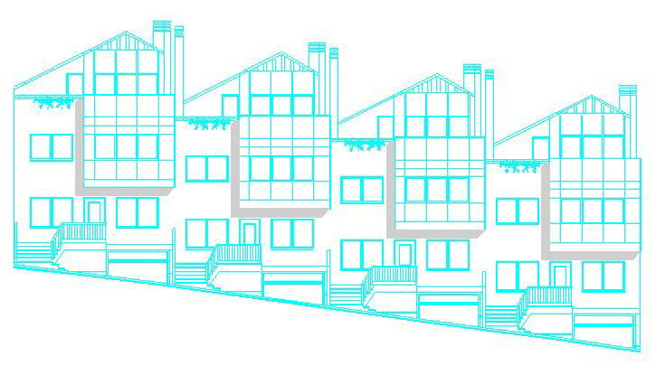

En EAJEL realizamos todo tipo de proyectos urbanísticos y arquitectónicos, que incluyen desde planes parciales, estudios de detalle, proyectos de urbanización, etc., dentro del ámbito urbanístico y proyectos de edificación, tanto de viviendas unifamiliares como de viviendas colectivas, edificios de uso terciario, centros comerciales, etc., en el arquitectónico.

Habida cuenta de la complejidad que supone hoy en día para cualquier promotor inmobiliario el proceso en el que se ve inmerso, es por lo que en EAJEL contamos con la estrecha colaboración de diversas empresas, dentro del ramo, para la realización de estudios geotécnicos del terreno, levantamientos topográficos, servicios infográficos en 3D y folletos publicitarios, etc. con el fin de poder ofrecer un servicio completo e integrado que cubra al máximo sus necesidades.
igualmente colabora desde sus principios con distintos estudios de Arquitectura, en los que por necesidades del trabajo o por plazos de entrega, necesitan un apoyo externo que les permita desarrollar un proyecto completo de ejecución a partir del proyecto básico o de un anteproyecto, realizando todos los planos y documentación necesaria para su consecución.